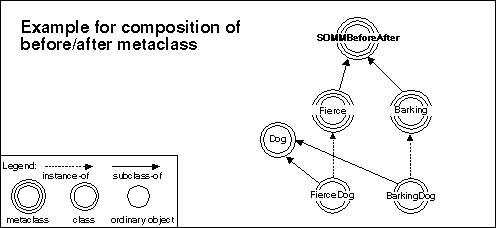

In SOM, classes are objects; metaclasses are classes and thus are objects,
too. Also depicted are the three primitive class objects of the SOM run
time: SOMClass, SOMobject, and SOMClassMgr.
Primitive objects of the SOM run time
The important point to be aware of here is that any class that is a subclass of SOMClass is a metaclass This chapter describes metaclasses that are available in SOMobjects Toolkit. There are two kinds of metaclasses:
Framework metaclasses-metaclasses for building new metaclasses and Utility metaclasses - metaclasses to help you write applications
Briefly, the SOMobjects Toolkit provides the following metaclasses of each category for use by programmers:
SOMMBeforeAfter
SOMMSingleInstance
The following sections describe each metaclass more fully. ClassorganizationoftheMetaclassFramework
.
